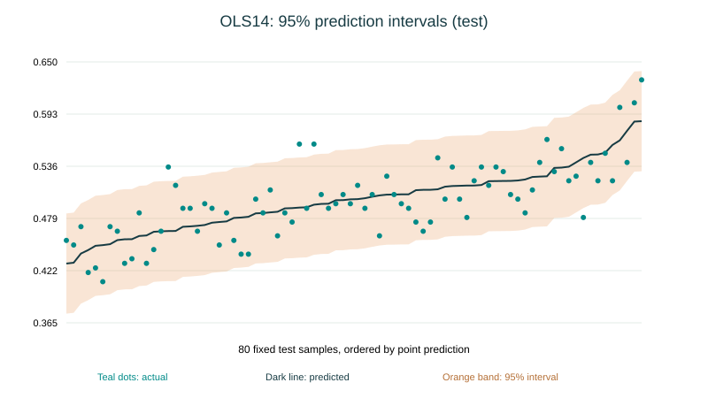

Business Understanding
以連續值預測洪水機率分數，建立可解釋的回歸教學基準。
AIoT · HOMEWORK 02 · MULTIPLE LINEAR REGRESSION
從洪水機率資料出發，走過資料理解、特徵選擇與模型評估。每個數字，都來自可重現的實驗。
資料屬教學用風險分數，並非經驗證的即時洪水預報。
01 / MODEL EXPLORATION
使用驗證集決定模型與 alpha，再以獨立測試集報告六項指標。
圖中為固定抽樣的 1,000 筆測試資料；所有指標使用完整 10,000 筆計算。
SELECTED FEATURES
14 特徵版本使用 SelectKBest、RFE、Backward SFS、Lasso 係數排名與 Permutation importance。20 特徵版本作為基準。
Adjusted R² 的 p 使用欄位數；Ridge / Lasso 的有效自由度不同，此欄僅作描述性比較。MAPE 排除真值為 0 的列；本測試集未排除任何列。
PREDICTION UNCERTAINTY
固定 14 特徵 OLS 模型，以 10,000 筆驗證資料校準 split conformal 的 95% 預測區間。

橘色帶是新觀測值的預測區間，並非平均值信賴區間。圖中為固定抽樣 80 筆測試資料，依預測值排序。此區間屬 SelectKBest14 / LinearRegression；完整 20 特徵模型殘差近零，區間會退化為浮點誤差。涵蓋率依賴交換性假設，不保證真實地區或每個條件的涵蓋率。
02 / TRY A PREDICTION
使用完整訓練集擬合的最佳模型，輸入新樣本。數值範圍參考訓練資料，不宣稱實際因果效果。
03 / CHOOSE YOUR DATASET
從下拉選單選擇 Flood、50 Startups 或自選資料集，在同一個分析區設定與訓練。
Flood 提供 2,000 筆洪水示範樣本；50 Startups 用於利潤預測；選擇「自選資料集」即可匯入 CSV 檔案或網址。此處為瀏覽器端獨立實驗，與上方 50,000 筆 Python 正式結果分開。Startups 僅示範匯入，主作業仍使用符合 14–39 原始特徵的洪水資料。
04 / CRISP-DM
以連續值預測洪水機率分數，建立可解釋的回歸教學基準。
確認 50,000 列、20 個輸入、零缺失與重複；分析分布、相關性與資料來源限制。
固定 seed=42 切分 60/20/20；中位數補值、標準化與特徵選擇只擬合訓練資料。
五種特徵選擇 × Linear Regression、Ridge、Lasso，加入完整 20 特徵基準。
比較 MAE、MSE、RMSE、R²、Adjusted R² 與 MAPE，並檢查五項迴歸假設。
匯出訓練後係數，支援單筆與 Python 批次 CSV 預測、圖表、結果下載。
完整模型殘差近零，前四項檢定退化；以下呈現 SelectKBest14 / OLS 的訓練殘差診斷。未拒絕假設不代表證明成立。
沒有時間與群組資料，Durbin–Watson 只能描述原始列序的殘差，不能證明觀測獨立。